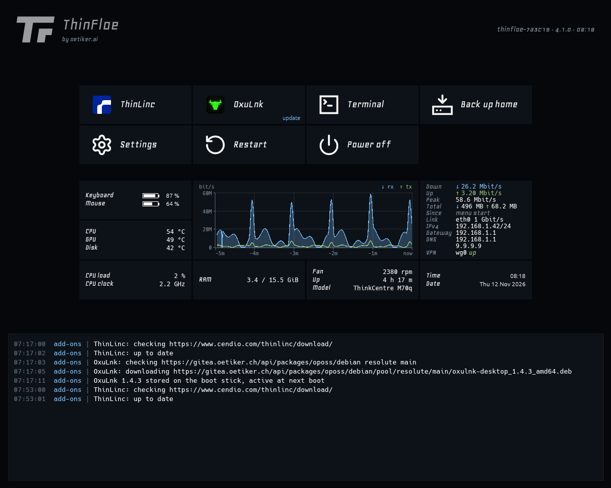

A thin client that floats in RAM
ThinFloe boots a PC from a USB stick or the network and runs entirely in memory. At power-off it is gone. Your home comes back at the next boot.
What you get
A small Ubuntu system for machines that only have to reach a remote desktop. It keeps nothing on the PC and asks for no care between upgrades.
-
Runs in RAM
The whole system loads into memory. The disk inside the PC is never written, and every boot starts from the same clean image.
-
Stick or network
Boot from a USB stick, or from a boot server over the network with no stick at all. Both run the same image.
-
Upgrades with a way back
A new release lands beside the running one, checked against its checksums. The previous version stays on the stick and starts from the boot prompt.
-
Your home comes back
Restart and Power off save the home directory to the stick, or to the boot server. The next boot restores it before the session starts.
-
Settings on the screen
WiFi and wired network, keyboard layout, monitors and the status area are set in the menu. A change applies at once and travels with the home.
-
Add-ons you tick
ThinLinc and OxuLnk are not in the image. Tick one and ThinFloe fetches it from its source, keeps it on the stick and looks for a new version every day.
-
No password ships
The image holds no login password and no root login. Nobody gets in over SSH until you set a password on that machine.
-
Ubuntu underneath
Ubuntu 26.04 with a Wayland session, a terminal, SSH and WireGuard. Add your own tile to the menu with one small file.
- Download
- 493 MB
- RAM in use
- 0.7 to 1.3 GiB
- Boot
- UEFI and BIOS
- Licence
- MIT
This is the whole desktop
One menu. Tiles start the remote desktop, a terminal or a home backup. Below them the machine reports on itself: batteries of keyboard and mouse, network traffic, temperatures. The log at the bottom says what the system did.

Put it on a stick
Any USB stick with 4 GB or more will do. Writing the image erases the stick.
-
Download
thinfloe-usb.img.zstfrom the latest release. -
Find the stick. Run this before and after you plug it in; the new disk is yours.
lsblk -
Write the image. Put the name of your stick in place of
sdX.zstd -dc thinfloe-usb.img.zst | sudo dd of=/dev/sdX bs=4M conv=fsync status=progress - Boot the PC from the stick. Later upgrades come from the Upgrade tile.
For network boot, building the image yourself and everything else, read the README. What changed in each release is in the changelog.